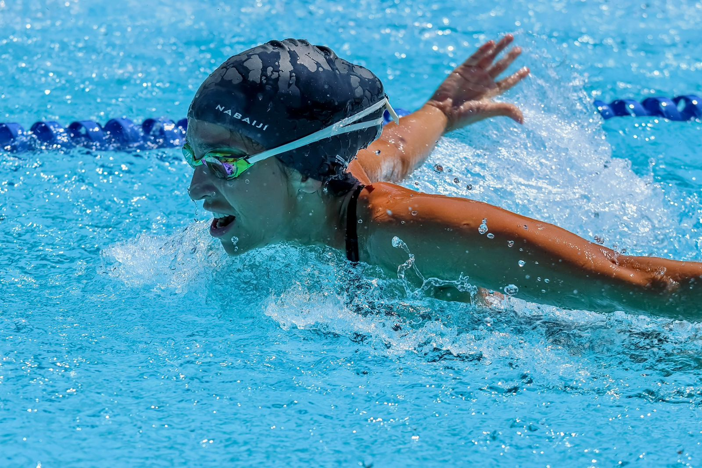
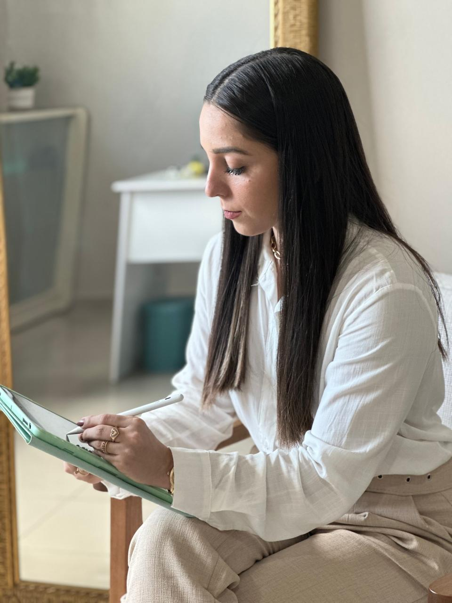

Sobre mim
Isabela Muñoz
Trajetória e Formação
Especialista em Nutrição Esportiva e Clínica, com foco em resultados estéticos e performance de elite.
+3000
8
Performance na Teoria e na Prática
Minha trajetória como ex-atleta de natação do Guarani Futebol Clube me ensinou que cada detalhe conta na busca pela vitória.
Atualmente, levo essa paixão para as pistas de corrida, onde conquisto pódios por categoria e testo, na pele, as estratégias de nutrição que desenvolvo para meus pacientes.
Diversas premiações nos esportes



Empatia e Ciência
O Cuidado em Cada Detalhe
Minha experiência em nutrição clínica e educação alimentar me ensinou que a nutrição é a base para uma vida plena. Ver a transformação na saúde das pessoas é o que me motiva diariamente.
Olhar Clínico e Humanizado
Educação Alimentar